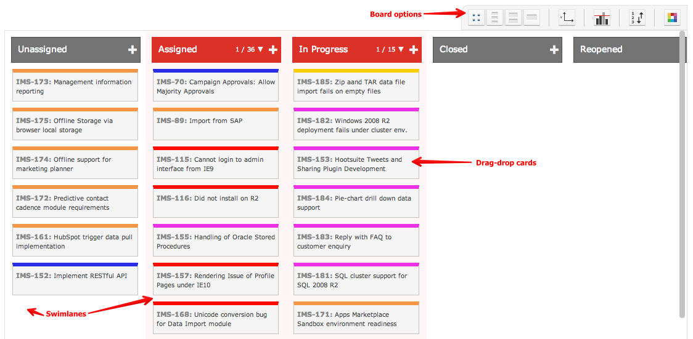

Planning Board
The Planning Board provides a visual surface where you can see your items. The purpose of the planning board is to help you visualize and move things around.

The Planning Board supports agile working such as Scrum and Kanban. However the board can be used by anyone regardless of their working practice.
- The board has vertical lanes commonly referred to as Swimlanes
- You drag cards between swimlanes so as to change their state, priority, resource assignment etc.
- You can choose the axis - for example, component, priority, resource, type, status, etc.
- Yuo can set limits such as "no more than 10 things in a lane"